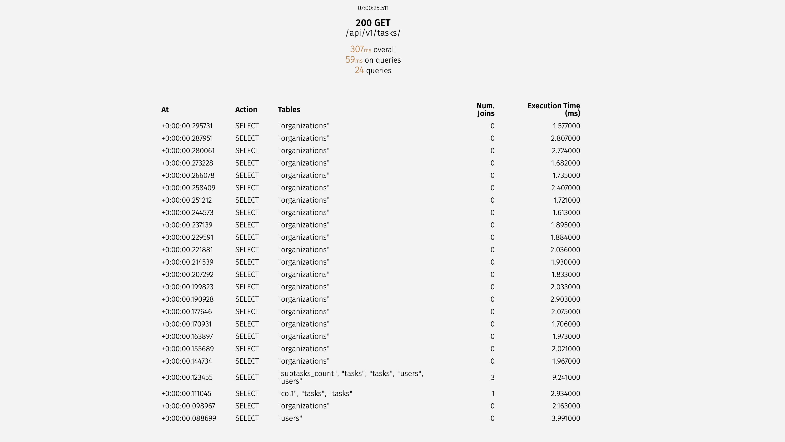
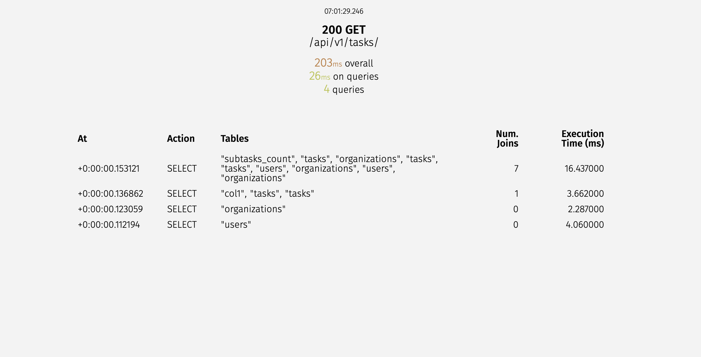
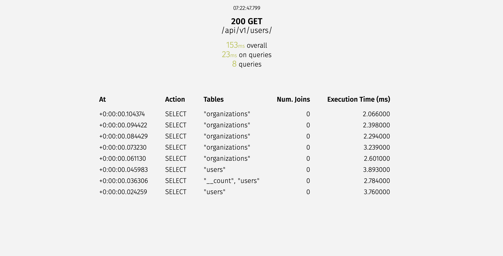
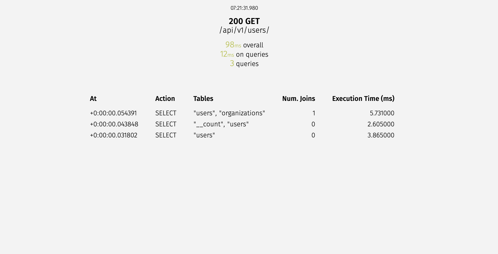
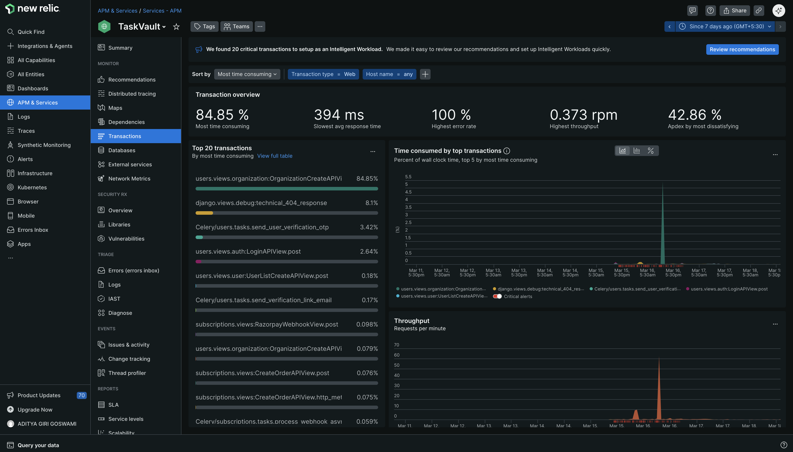

Optimization and Monitoring¶
Performance and stability are key priorities for TaskVault. We use a suite of tools to profile, optimize, and monitor the application.
Toolset¶
- Pyinstrument: A low-overhead Python profiler used to identify bottlenecks in the request lifecycle and slow code paths.
- Locust: Used for high-concurrency load testing.
- Django-Silk: An interactive query profiler to catch N+1 queries and SQL issues in development.
- New Relic: Production APM for real-time metrics, error tracking, and performance monitoring across Django and EC2 infrastructure.
Performance Optimizations¶
- Query Optimization: Resolved N+1 query issues using
select_relatedandprefetch_relatedacross high-traffic APIs (Tasks, Users, and Subscription). - Password Hashing: Replaced Django default hasher with Argon2 (
argon2-cffi) for stronger password hashing and reduced CPU overhead in auth flows. - Caching & Response Time: Added Redis-backed caching for frequently accessed endpoints and reduced average API response latency.
Argon2 Password Hashing Before/After¶
We profiled CPU time before and after switching to Argon2 using Pyinstrument. Compare the result pages below.
Profiling report (before)¶
Profiling report (after)¶
Django-Silk: N+1 Query Optimization¶
Task List API Optimization¶
Objective: Resolve N+1 bottleneck in GET /api/v1/tasks/.
Problem: For each task, separate queries were executed to fetch related owner, assignee, and organization data.
Solution: Use deep select_related in the queryset:
queryset = Task.objects.select_related(
"owner",
"assignee",
"parent_task",
"organization",
"owner__organization",
"assignee__organization",
)
Impact: Query count reduced from 20+ (linear) to 4-5 stable queries (constant overhead).
-
Task List API Sql Queries before optimization

-
Task List API Sql Queries after optimization

User List API Optimization¶
Objective: Eliminate N+1 on GET /api/v1/users/.
Problem: Each user row executed an extra query for organization details.
Solution: Use:
qs = User.objects.select_related("organization").all()
Impact: Query count became constant (1 query), reducing latency and DB load.
-
User List API Sql Queries before optimization

-
User List API Sql Queries after optimization

Locust Load Testing Analysis¶
We analyzed two Locust reports:
- hundred_user.html: 100 users, ramp up 10 users per second
- more_than_hundred.html: 1000 users, ramp up 10 users per second
Report Summary¶
- 100 users (slow ramp): Stable throughput with average response times typically within acceptable bounds; low failure rate; indicates system can handle baseline traffic.
- 1000 users (faster ramp): High throughput but increased latency and potential timeouts under peak load; useful to identify bottlenecks in DB query handling and worker concurrency.
Embedded reports¶
100-user report¶
1000-user report¶
New Relic Monitoring¶
We use New Relic for full-stack observability: APM, error tracking, transaction tracing, and real-time dashboards.
- Dashboard: We monitor CPU, memory, throughput, and key transaction times.
- Alerts: Real-time alerts on error rate spikes and slow endpoints.
- APM Traces: Deep stack traces for slow requests and database query timing.

Optimization Techniques¶
We implement several layers of optimization across the stack:
- Database Indexing: Ensuring UUID paths and frequently queried fields are indexed.
- Query Optimization: Using
select_relatedandprefetch_relatedto solve N+1 structural problems. - Redis Cache: Performance boost for high-traffic catalog data by caching response.
- Background Processing: Offloading heavy tasks (like email and payment reconciliation) to Celery.